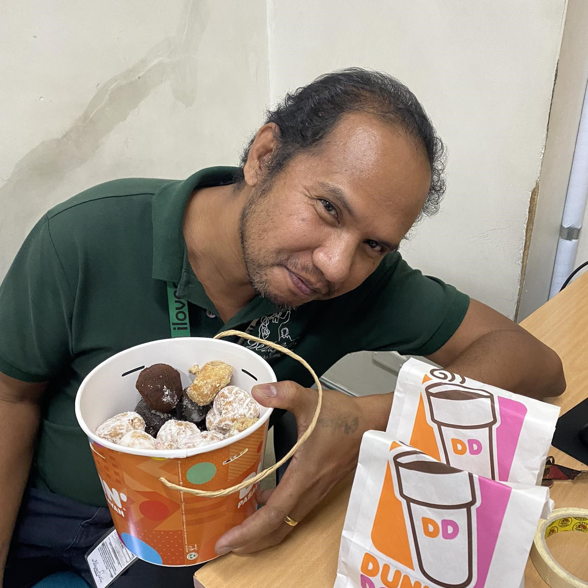
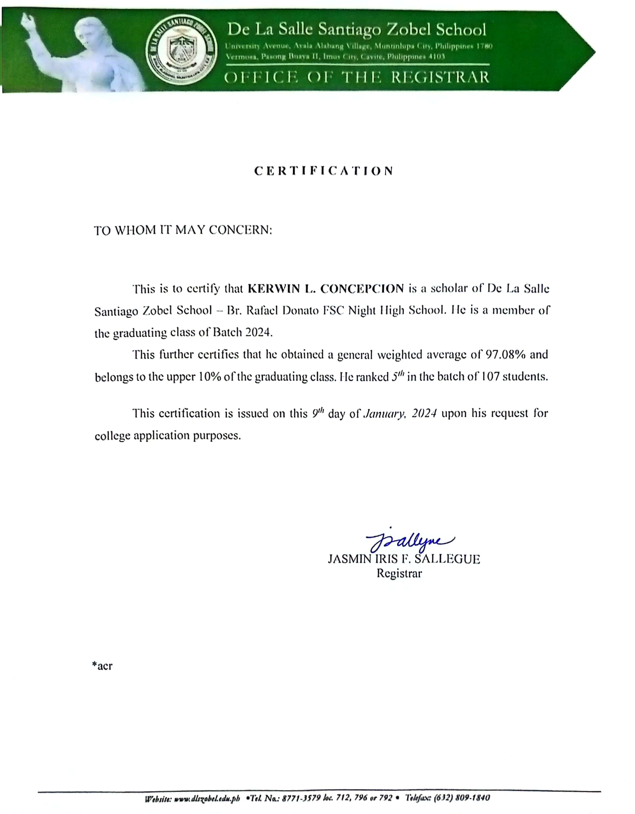
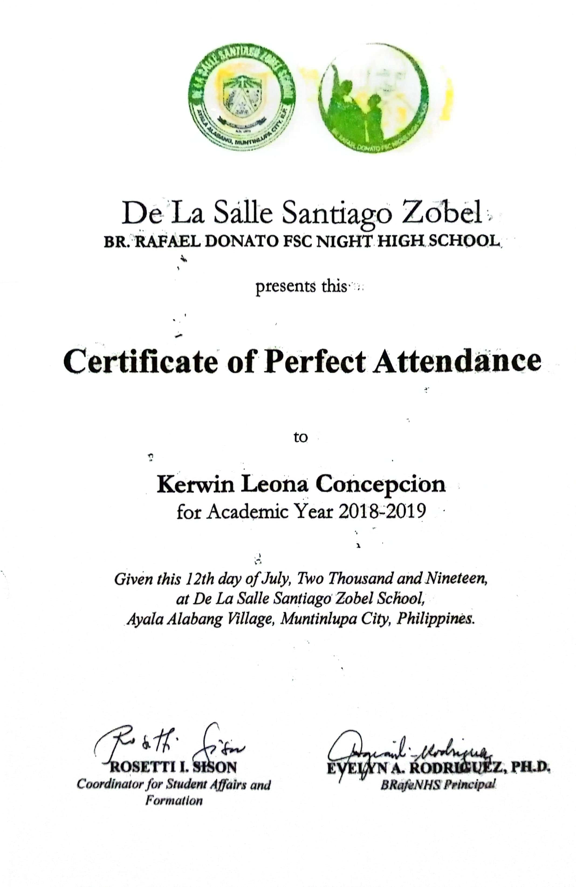
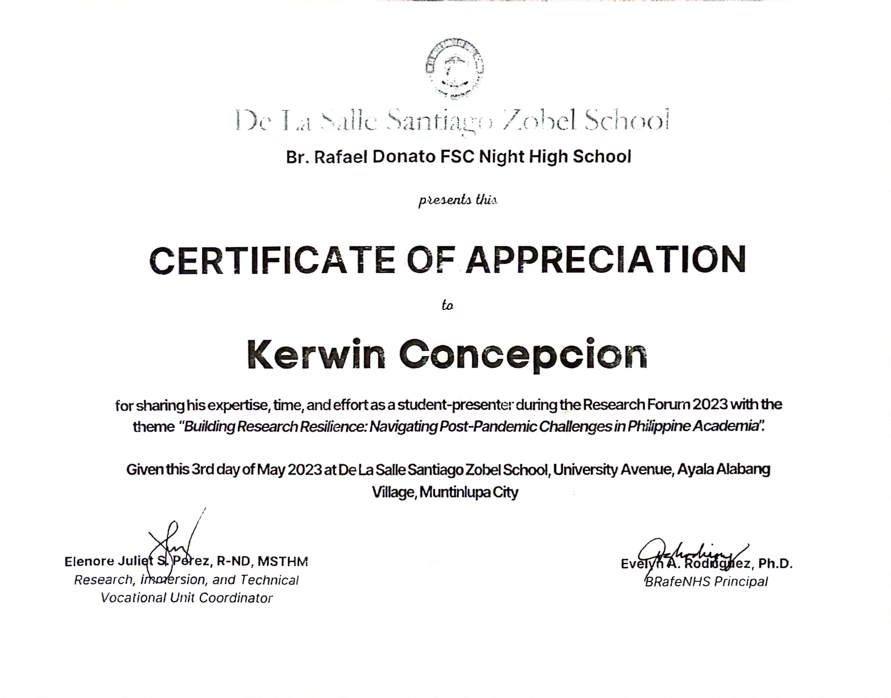
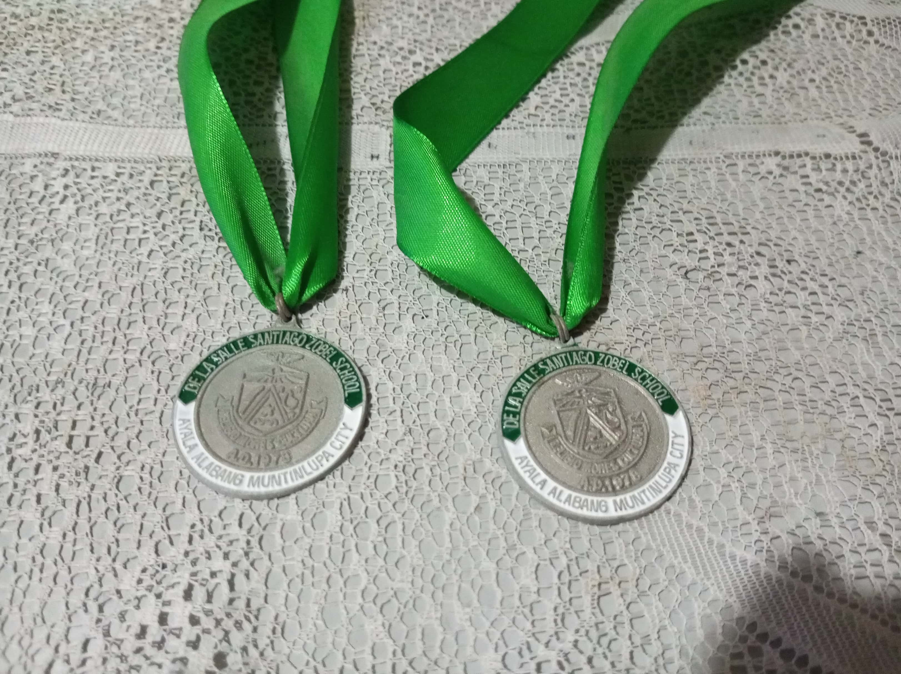
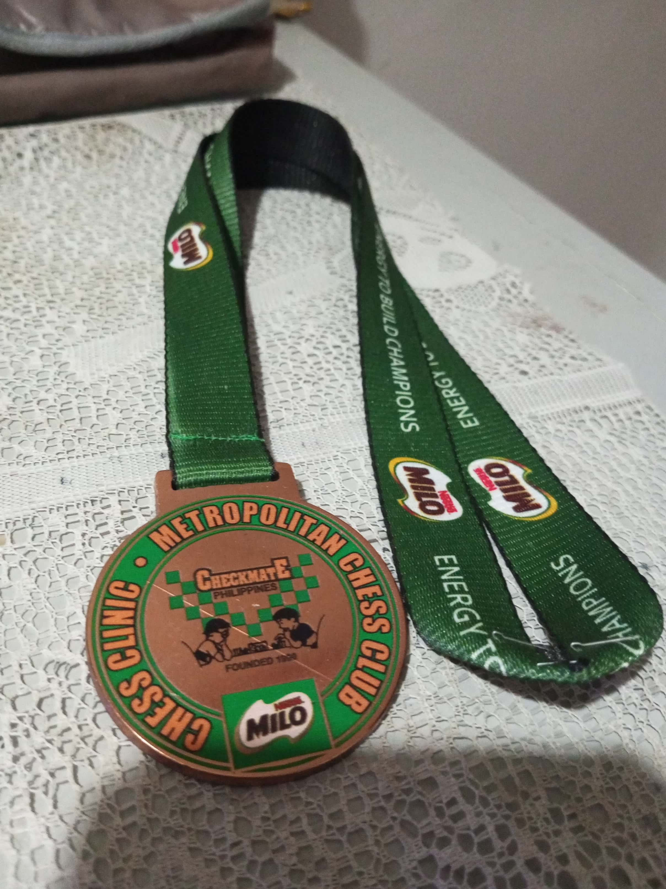
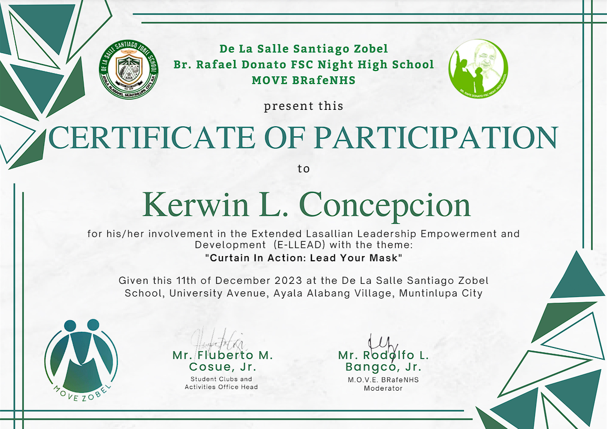
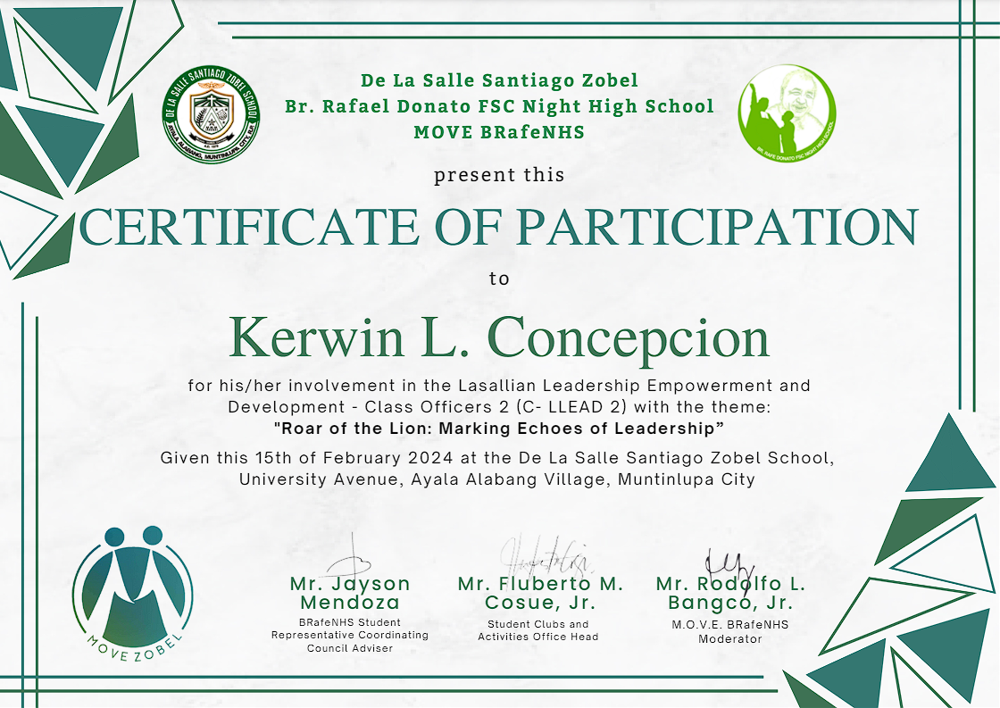

I’m a BSIT–Game Development student interested in technology, design, storytelling, and creating
engaging digital experiences. I enjoy learning by building projects, solving technical problems,
and collaborating with others.
My experience includes freelance hardware repair, computer systems servicing, marketing and social
media management, and student organization work. I also enjoy animation, music composition, content
creation, and theater. I was a member of TaLa (Tanghalang Lasalyano) from 2019–2024, and served as
Props Manager and Business Manager of Dulaang Perpetual from 2024–2025.
I’m working toward a career in game development, software development, and digital design. My tools
include Canva, Adobe Photoshop, IbisPaint, MediBang Paint, and Adobe Animate. I also work with HTML,
CSS, JavaScript, Python, Java, PHP, and SQL.
The most modern and high-quality techniques and years of skills on the table.
Social Media Marketing Head
High-quality advertisements and graphic designs for a small business named "Wena's Baked Goods".
Student Assistant
Not only having studies to take care of, but also work-like duties and shifts that requires skills to properly handle.
Animator & Content Creation
I make high-quality content and animation of any category at a level that exceeds expectations.
Theater Actor
Member of TaLa (Tanghalang Lasalyano) from 2019–2024. Served as Props Manager and Business
Manager of Dulaang Perpetual from 2024–2025.
Unforgettable Catch Phrases
Sir Beauwolf Aquino
"Tara sama ka may aayusin tayo"

Sir Marlon Morales
"magkape kayo jan"
Sir Angelo Banzon
"Guys, yung Github nyo"
Sir Alvin
"Oh anjan na pala kayo. Upo kayo, upo kayo"
Memorable Moment
Select a quote card to view its full text.
Some Certificates and Awards







Resume
Education
University of Perpetual Help System Dalta - Las Piñas
2024 — Present
PRO, Junior Philippine Computer Society - UPHSD Las Piñas Chapter
Business Manager and Props Manager, Dulaang Perpetual (Theater Acting Organization)
De La Salle Santiago Zobel BRafeNHS
2018 — 2024
Salutatorian Bacth 2024 (Overall Top 2)
Vice President (Grade 12)
Top 5 Batch Ranking (Grade 11)
98 Weighted Average
MyCraft Club Member (A.Y. 2018-2019)
TaLa (Tanghalang Lasalyano) Member (2019-2024)
LP (Lasalyanon Pinoy) Member (A.Y. 2021-2022)
Athletics Club Member (A.Y. 2022-2023)
Almanza Elementary School
2012 — 2018
Top 25 Batch Ranking (Grade 6)
90 General Average (Grade 6)
Journalism: Feature Writer (Grade 6)
Chess Player Competitor
Badminton Player
Experience
Computer Systems Servicing
2024 — Present
Applying technical knowledge to computer setup, maintenance, and troubleshooting.
Public Relations Officer, JPCS Las Piñas Chapter
2025 — 2026
Served as Public Relations Officer of the Junior Philippine Computer Society, UPHSD Las Piñas Chapter.
Freelance Hardware Repair
2021 — Present
Takes in-house commissions such hardware and software repairs.
Has also completed several commissions despite his young age.
Marketing & Social Media Manager
2020 — Present
Sold hundreds of products.
Worked on graphic designs for social media marketing.
Student Assistant
2023 — 2024
Have been assigned to several different tasks both on and off field.
Have tackled both physical and paper works.
Journalism Feature Writer
2017 — 2018
A year worth of experience and practice in writing.
Have entered contests to engage in more meaningful journalistic journey.
My skills
Content Creation
80%
Graphic design
70%
Hardware & Software
90%
Journalism
50%
Portfolio
JOURNAL ENTRY #1
Date: 02/29/2024
1. Clean the computers at comlab
2. Manage and guard comlabs 1, 2, and 3
3. Tidy up the keyboards and mouse
4. Check if computers have problems
5. Clean, segregate, and tidy up technical and electrical equipment
6. Fixed pc of BR-SRCC
--------------------------
As of today, I was tasked to manage the comlabs, clean, segregate,
and tidy up equipment in the mini warehouse as well as the computers in the comlabs.
Additionally, I checked all the computers on my own to see if there were any problems that may
compromise the works of the students that will use the computers. I was able to find two monitors
that were not displaying anything, nor turning on. We were able to resolve this issue by plugging
the power cable of the monitor to the outlet which fixed the problem. Alongside all of this,
I cleaned the computer lab beside the library with a towel—specifically the monitors, mice,
keyboards, and tables for it to be clean.
1. Inventory checking of computers, laptops, printers, and iPads in different departments of the main building
2. Fixed a laptop from a department
3. Checked out and fixed apple box not working
4. Fixed printer/scanner to laptop connection
5. Fixed pc of BR-SRCC (again)
--------------------------
Today we were tasked to check the inventory of each department in the main building which included the CMO, SAO, BR-SRCC Office, HS SRCC office, SCAO, and more. We were able to count all the techs that were borrowed from the school for the teachers, admins, and staff. Alongside this we were able to note the malfunctioning techs in which they were noted. We were also able to fix a laptop that was assigned to us to fix by our supervisors. Personally, I came with our other supervisors to check malfunctioning techs such as an apple box as well as a printer. For the apple box we just had to plug it into another outlet as the extension it was connected to did not work. As for the printer/scanner, we had to connect and reconnect the connection, download the printer drivers, and restart the laptop as well as the printer/scanner to work.
1. Retrieved all defective laptops from the Robotics team and fixed it.
2. Encoded inventory (computers, laptops, iPad, printers) in excel
3. Made bootable ChromeOS USB
4. Reformatted all defective laptops from the robotics team.
--------------------------
We started off the day with the task of retrieving all the defective laptops from the Robotics team in the Saint Joseph building in which the three of us had to carry in our hands. After making the trip from point A to point B and back, we started to fix and install ChromeOS in the laptops right away. Some of the laptops had battery problems in which we put them aside for the meantime and focused on the ones that work to install chromeOS to make it a lot faster. We did this for the entire afternoon because of the amount of laptops we had to deal with. To install the ChromeOS we just had to plug in the bootable USB into the unit, go into BIOS, change the first boot to the USB, and save and exit. From there on we were able to install the OS. I was also tasked to encode some of the leftover inventory on the paper to the excel sheet.
JOURNAL ENTRY #4
Date: 03/11/2024
1. Encoded inventory (computers, laptops, iPad, printers) in excel
2. Made bootable ChromeOS USB
3. Reformatted all defective laptops from the robotics team.
4. Leaned keyboards, mice, monitors, and tables in comlab 2
5. Set up a computer system for classroom
--------------------------
We were tasked once again to continue fixing and installing ChromeOS in the laptops right away. Some of the laptops had battery problems in which we put them aside for the meantime and focused on the ones that work to install chromeOS to make it a lot faster. We did this for the entire afternoon because of the amount of laptops we had to deal with. To install the ChromeOS we just had to plug in the bootable USB into the unit, go into BIOS, change the first boot to the USB, and save and exit. From there on we were able to install the OS. I was also tasked to encode some of the leftover inventory on the paper to the excel sheet. We were able to finish all the laptops today and proceeded to clean the computer lab. After that we were also given the assignment to set up a computer system setup in one of the classrooms in which we had to connect three external monitors to the main computer using HDMI and VGA cables. We also had to fix some software settings.
JOURNAL ENTRY #5
Date: 03/12/2024
1. Retrieved all defective laptops from the Robotics team and fixed it.
2. Encoded inventory (computers, laptops, iPad, printers) in excel
3. Made bootable ChromeOS USB
4. Reformatted all defective laptops from the robotics team.
--------------------------
Today we were just tasked to clean the comlab 2 once again just like the past couple of immersion days. We also set up a printer to computer connection for the CMO office by troubleshooting the printer scanner itself as it was making loud noises and kept jamming. We just replaced the rolling wheel that lets the printer get fed by papers. With that we also installed the drivers for the printer scanner by downloading the driver online by searching the serial number of the printer scanner then proceeded with the installation guideline. After that, we set up the connection by inputting the local IP of the printer and we did a test print to see if it was working.
JOURNAL ENTRY #6
Date: 03/13/2024
1. Retrieved all defective laptops from the Robotics team and fixed it.
2. Encoded inventory (computers, laptops, iPad, printers) in excel
3. Made bootable ChromeOS USB
4. Reformatted all defective laptops from the robotics team.
--------------------------
Today we were just tasked to clean the comlab 2 once again just like the past couple of immersion days (brushed the keyboards, wiped the mouse and tables with a lightly damped cloth, and wiped the monitors with a dry towel). Additionally while we waited if any help or support was needed from us, we were taught how to code basic scripts i n C++ using the VScode software.
JOURNAL ENTRY #7
Date: 03/18/2024
1. Retrieved all defective laptops from the Robotics team and fixed it.
2. Encoded inventory (computers, laptops, iPad, printers) in excel
3. Made bootable ChromeOS USB
4. Reformatted all defective laptops from the robotics team.
--------------------------
For this day, we were called to fix an internet problem of a dayhigh guidance counselor as she was having trouble connecting to the internet. We first checked the connection if it was secured, and it was. Our next step was to change the LAN cable as a faulty LAN cable can cause this problem, however the issue still persisted. Multiple LAN cables were tested, but none of them worked. Our next step was to check the connection for both the PC and the RJ45 port of the modem. The port on the back of the PC was working, however the LAN/RJ45 port on the modem did not. We called sir Alvin as it was his area of expertise. Time was constrained, so we will fix it tomorrow. Our next agenda was to fix a printer problem because it has a loop copy issue and the toner was dirty which caused the printed papers to have a smudge on the left and right borders. We replaced the toner of the printer, but the loop copy issue still persisted, and we just requested to change the printer as a whole.
JOURNAL ENTRY #8
Date: 03/19/2024
1. Fixed internet network problem by checking the server that the PC is connected to.
2. Made a github account and simple HTML, Javascript, CSS, and Python script to make an index.
--------------------------
For today we were able to finally fix the network problem that one of the teachers from the day highschool guidance were facing. I came along with sir Alvin to properly check the server network that it was connected to. I helped him connect, reconnect, and change the cabling of the server to the teacher’s computer. We used a device that checks if the receiver from the computer can accept the network by the transmitter of the server. After that we made a simple github account to store our E-portfolio in by logging into our zobel accounts.
JOURNAL ENTRY #9
Date: 03/25/2024
1. On standby for technical service
--------------------------
Today was quite mundane as we were just in the office waiting for technical service support since we’ve finished other things previously such as inventory checking, cleaning the computer labs, and other previous pending support needed by teachers. That is all for today.
JOURNAL ENTRY #10
Date: 04/01/2024
1. On standby for technical service
--------------------------
Today was quite mundane as we were just in the office waiting for technical service support since we’ve finished other things previously such as inventory checking, cleaning the computer labs, and other previous pending support needed by teachers. That is all for today.
JOURNAL ENTRY #11
Date: 04/02/2024
1. On standby for technical service
2. Fixed IP address problem on printer for Head coach of Athletes
--------------------------
We only had one technical support service today and it was called by the head coach of the athletes. He was having a problem with his computer because the IP kept changing everyday which disconnects to the laptop that sir was using. We made a simple bandaid for it by repasting the newly-made IP by the printer to the laptop so that it will be able to connect. This task was handed down to the other department in which my other two colleagues are in since their department handles those types of problems.
JOURNAL ENTRY #12
Date: 04/03/2024
1. On standby for technical service
2. Changed password for student using ISTS software
--------------------------
As for today, a student came into our office asking if we can change his password. The student only told sir Bwolf the problem. We used a simple software by the ISTS in which stores all the databases of the student accounts and with that we were able to change the student’s password to a new one. That is all for today.
JOURNAL ENTRY #13
Date: 04/04/2024
1. On standby for technical service
--------------------------
Today was quite mundane as we were just in the office waiting for technical service support since we’ve finished other things previously such as inventory checking, cleaning the computer labs, and other previous pending support needed by teachers. That is all for today.
JOURNAL ENTRY #14
Date: 04/05/2024
1. On standby for technical service
2. Finished Github documentations and website (HTML, Javascript, and CSS)
--------------------------
Today, sir Gelo came into our office and asked about the progress of our website through the site called Github. I was able to present my work with full confidence as I believe it was the proper look and feel that sir Gelo was looking for. Afterwards, he also asked my fellow colleagues. After he left we continued our work for academics since we were just on standby for technical support to be called by teachers, admins, or students.